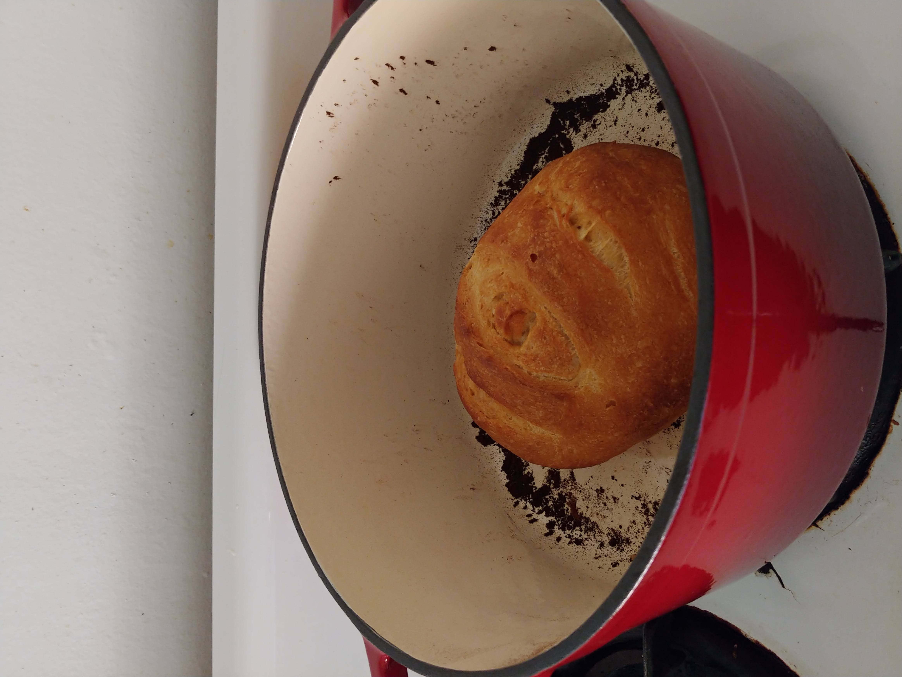
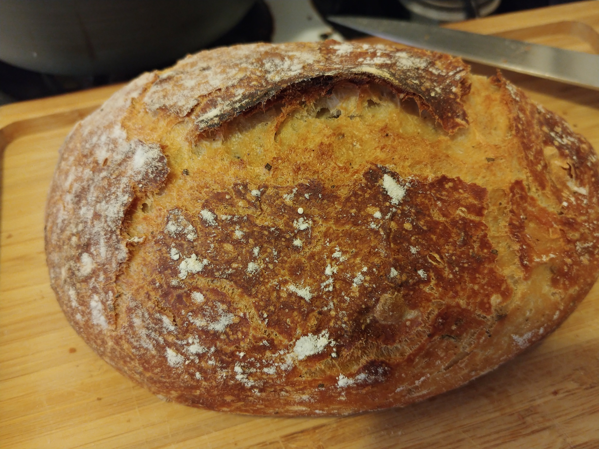

I baked frequently during quarantine. From lemon loaves, cookies and many sourdough breads baked in my below red dutch oven, I have burned myself numerous times because I tend to move very quickly in the kitchen. Every month I bake a chocolate chip recipe you may find below.



You will need the following ingredients: 1 1/2 cup and 3 tablespoons of all purpose flour; 1/2 teaspoon of baking soda, 1 teaspoon of baking poswer, and a healthy pinch of salt. Additonally, you will need 2 teaspoons of vanilla extract, 1/2 cup plus 3 tablespoons of dark brown sugar, 2 teaspoons of unsulfured blackstrap molasses, 1/2 cupt of granulated white sugar, 2/3 cup of bittersweet chocolate chips, 1/2 cup of semi-sweet chocolate chips, 12 tablespoons of unsalted room temperature butter and 1 large egg.
Steps
1. In a large bowl mix together sugar and molasses and stir to combine. Break up molasses clumps with your hands. Set this bowl aside.
2. In another large bowl use a sieve to combine and strain baking powder, baking salt and flour.
3. In another bowl pommade butter until its the texture of mayo. You may use your hands or hand mixer. Then add the sandy molasses mixture and combine until smooth.
4. Add egg and vanilla, and mix for 15-30 seconds. No longer than this because the cookies will expand and deflate.
5. Add flour in two additions mixing gently until it has been combined. Then fold chocolate chips (be generous!)
6. Chill the dough in the fridge for at least 30 mins, preferably for 24 hours.
7. Use parchment paper to line a cookie sheet, and bake at 325 degrees F, for 12 minutes, and not a second longer.
Enjoy!